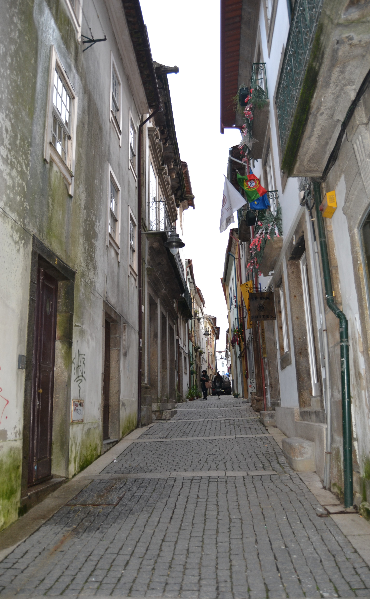

Rua de D. Gualdim - vista Poente.

Imagem atual da RuaImagem atual da Rua
Longa e curiosíssima rua que no Mappa se estende da praça do Pão até ao Terreiro de Sto. António.
Aberta sobre uma rua do reticulado da cidade romana é hoje uma das raras artérias medievais que não sofreu o alargamento feito nos finais do séc. XIX a quase todas as ruas do bairro das Travessas.
Em data que desconhecemos, foi dividida em duas: rua de D. Gualdim, da Sé até à rua D. Afonso Henriques, e rua de S. Tiago, daí até à rua de S. Paulo.
Não sabemos hoje qual a casa onde viveu D. Gualdim Pais, célebre guerreiro do nosso primeiro rei, e que apenas a tradição diz aqui ter habitado; ou onde se situou a casa cedida pelo arcebispo D. Paio Mendes aos Templários para hospício dos peregrinos. Sabemos sim que esta rua aparece no mais antigo livro de Nota do Arquivo da Câmara Municipal de Braga, onde a 12 de Fevereiro de 1445 Vasco Jorge, escrivão da Câmara, lançou o primeiro prazo dos seus bens, com o nome de Cruz da Picota. Em 1459 vem já noutro prazo como rua de D. Gualdím.
Por essa data já as duas partes da rua se deviam assumir e ter populações bem diferentes: as da metade Norte, mais rica, próximas da Sé e praça do Pão, centro fundamental da cidade medieval e onde um século mais tarde seria construído, por mando de D. Diogo de Sousa, o novo edifício da Câmara. E a parte Sul junto à porta de S. Tiago, com a sua igreja própria (a Igreja de Santiago, hoje Igreja da Cividade) então virada para esta rua.
Em 1750 muita da sua importância foi alterada: o arcebispo D. José de Bragança já mandara fazer a ala barroca do seu palácio e na sua ideia já gravitava a vontade de mudar o edifício da Câmara para mais perto de si, o que fez em 1754. O comércio há muito que saíra da rua dos Burgueses para a doSouto; e, também, já desde D. Diogo de Sousa que os mercados se tinham implantado, com recintos próprios, noutros locais, um deles, até relativamente próximo. E a Igreja de Santiago, viria a ser reconstruída, mas com a planta invertida, isto é, com a fachada virada para a rua D. Gonçalo Pereira, 37 anos após.
Como dissemos, hoje a rua de D. Gualdim, isto é, a parte Norte, conserva muitíssimo bem o aspecto que mostra no Mappa. Pena só que as curiosas casas sobradadas do prazo n.º 1, a casa do prazo n.º 18 e o edifício da Câmara tenham sido perdidas na voragem dos séculos.
A metade Sul, essa, mercê do alargamento que recebeu nos inícios do nosso século, transformou-se totalmente, sendo hoje uma das ruas mais incaracterísticas de Braga.
Das 20 casas do lado Nascente e 23 do Poente eram 10 e 13, respectivamente, prazos do Cabido.